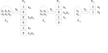

The Real Hash Was the Friends We Made along the Way
Vaibhav Sagar (@vbhvsgr)
Minimal Perfect Hashing
FOSSASIA 2018
Minimal Perfect Hashing?
- Minimal
- Perfect
- Hashing
Hashing
function that takes a key to a fixed size value (often an integer)
Perfect Hashing
hashing without collisions (injective)
Minimal Perfect Hashing
- all possible keys are known in advance
- perfect hashing without gaps
- bijective mapping from n keys to 1..n
Pros
- usually more space-efficient than most other approaches
- (especially if you are using this to create a hashtable)
Cons
- upfront construction cost
- static
- ⚠️ produces nonsense results for absent keys ⚠️
tl;dr
- if you’re not sure you need this, you probably don’t
Approaches
Not Discussed Today
- Hash, Displace, and Compress (CHD)
- Hypergraph peeling?
Also Not Discussed Today
Discussed Today
- Fast and scalable minimal perfect hashing for massive key sets
- https://arxiv.org/abs/1702.03154
How does it work?
Cascading Collisionless Bitarrays
Cascading Collisionless Bitarrays
Cascading Collisionless Bitarrays

Cascading Collisionless Bitarrays

Requirements
- Family of hash functions
- Bitvectors supporting rank (and select)
Family of hash functions?
- My understanding is that hash functions that take a salt should work
- Suspiciously similar to Bloom filters
Bitvectors supporting rank and select?
- rank(i) is the number of 1s at or prior to index i (1-indexed)
- select(i) is the index n where the ith 1 is located (1-indexed)
- Look up “succinct data structures” for more fun with these
Bitvectors supporting rank and select?

How it works
High level
- Until we’ve reached max level or there are no more keys:
- Turn the key into a number i ∈ [0..n)
- Inspect bitvector[i]:
- if 0 and no collision: bitvector[i] = 1
- if 1: bitvector[i] = 0 and record collision
- if 0 and collision: do nothing
- Remove non-colliding keys
- If there are leftover keys, put them in a hashtable
Turning the key into a number
Populating the bitvector
- Initialise two bitvectors B and C with 0s
- When setting an index i:
- If B[i] ≡ 0 and C[i] ≡ 0 then B[i] = 1
- If B[i] ≡ 1 then B[i] = 0 and C[i] = 1
- If B[i] ≡ 0 and C[i] ≡ 1 then do nothing
Lookup
- For each level:
- Hash the key and check if the corresponding index is set
- If so, find the rank
- If not, increment the level count and repeat
- Otherwise check the leftovers
Example
Keys
- Bondi
- Tamarama
- Bronte
- Clovelly
- Gordons Bay
- Coogee
Level 0
┌─┐
│0│ <- ["Clovelly","Bronte"]
├─┤
│1│ <- ["Gordons Bay"]
├─┤
│0│
├─┤
│0│
├─┤
│0│ <- ["Coogee","Tamarama"]
├─┤
│1│ <- ["Bondi"]
└─┘Level 1
┌─┐
│0│
├─┤
│0│
├─┤
│0│
├─┤
│0│ <- ["Coogee","Clovelly","Bronte","Tamarama"]
└─┘Level 2
┌─┐
│0│ <- ["Coogee","Clovelly","Bronte","Tamarama"]
├─┤
│0│
├─┤
│0│
├─┤
│0│
└─┘Level 3
┌─┐
│0│
├─┤
│0│ <- ["Coogee","Clovelly","Bronte","Tamarama"]
├─┤
│0│
├─┤
│0│
└─┘Level 4
┌─┐
│0│
├─┤
│0│
├─┤
│0│ <- ["Coogee","Clovelly","Bronte","Tamarama"]
├─┤
│0│
└─┘…
- I went ahead and ran this for 20 more levels and the keys kept colliding
- No slack in our bitvectors
- Let’s try with
gamma = 1.5
Level 0
┌─┐
│1│ <- ["Bronte"]
├─┤
│1│ <- ["Gordons Bay"]
├─┤
│0│
├─┤
│0│
├─┤
│0│ <- ["Coogee","Tamarama"]
├─┤
│0│
├─┤
│1│ <- ["Clovelly"]
├─┤
│0│
├─┤
│1│ <- ["Bondi"]
└─┘Level 1
┌─┐
│0│ <- ["Coogee","Tamarama"]
├─┤
│0│
├─┤
│0│
└─┘Level 2
┌─┐
│1│ <- ["Tamarama"]
├─┤
│1│ <- ["Coogee"]
├─┤
│0│
└─┘Lookup
0 1 2 3 4 5 6 7 8
┌─┬─┬─┬─┬─┬─┬─┬─┬─┐
│1│1│0│0│0│0│1│0│1│ b0
└─┴─┴─┴─┴─┴─┴─┴─┴─┘
└──────────── hashWithSalt 0 "Coogee" `mod` 9
┌─┬─┬─┐
│0│0│0│ b1
└─┴─┴─┘
└──────────────────── hashWithSalt 1 "Coogee" `mod` 3
┌─┬─┬─┐
│1│1│0│ b2
└─┴─┴─┘
└────────────────── hashWithSalt 2 "Coogee" `mod` 3Lookup
False Positive
0 1 2 3 4 5 6 7 8
┌─┬─┬─┬─┬─┬─┬─┬─┬─┐
│1│1│0│0│0│0│1│0│1│ b0
└─┴─┴─┴─┴─┴─┴─┴─┴─┘
└────────────────── hashWithSalt 0 "Shelly" `mod` 9
┌─┬─┬─┐
│0│0│0│ b1
└─┴─┴─┘
┌─┬─┬─┐
│1│1│0│ b2
└─┴─┴─┘False Positive
Minimal Perfect Hash Table
- Create a values vector
- values[hash(key)] = value
- ???
- PROFIT!!!
Here’s some code
Further reading
Questions?
Thank You!
These slides
https://vaibhavsagar.com/presentations/minimal-perfect-hashing/